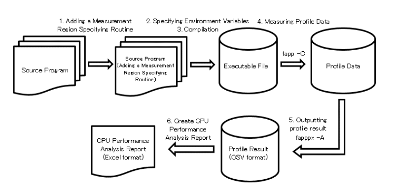
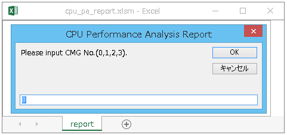
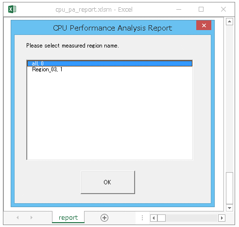

The CPU Performance Analysis Report aggregates a large amount of CPU performance analysis information measured by multiple executions and visualizes it using tables and accompanying graphs.
The CPU Performance Analysis Report is designed to fit on a single A3 size when printing, and the following three reports are prepared depending on the type and granularity of information to be displayed.
Unit report
Brief Report
Standard Report
Detail Report
The procedure for creating a CPU Performance Analysis Report is as follows.

See also
Use a Advanced Performance Profiler to measure CPU performance analysis information.
The CPU Performance Analysis Report provides a unit report, a Brief Report, a Standard Report, and a Detail Report depending on the type and granularity of information to be displayed.
The CPU Performance Analysis Report file is in Microsoft Excel file format (.xlsm).
Each report overview is as following.
Report type
Description
Unit report
This is the CPU performance analysis report that requires the least number of measurements to create.
Outputs rough information about execution time, computing performance, memory throughput, and number of instructions.
When using a single report, perform measurement using the detailed profiler once.
Brief Report
This is a CPU Performance Analysis Report that requires the least number of measurements.
If you want to use the CPU Performance Analysis Report easily, we recommend the Brief Report. The amount of information is less than that of the Standard Report, but the number of measurements required to create the report can be reduced compared to the Standard Report.
When using a Brief Report, perform measurement with the Advanced Performance Profiler five times.
Standard Report
This is a standard CPU Performance Analysis Report. Standard Reports are recommended for normal use.
When using a Standard Report, perform measurement with the Advanced Performance Profiler 11 times.
Detail Report
This is the most detailed CPU Performance Analysis Report.
If there is a shortage of information in the Standard Report, a Detail Report is recommended. Although the number of times of measurement for creating a report is the highest, all information of the CPU Performance Analysis Report is displayed.
When displaying a Detail Report, perform measurement with the Advanced Performance Profiler 17 times.
See also
The input file used for each report is the same. Therefore, for example, if you want to change to a Detail Report after creating a Standard Report, additional measurement is only required for the difference of 6 times.
A list of information that can be referenced in each CPU Performance Analysis Report is shown below.
Table title
Unit
Brief
Standard
Detail
Table overview
Information
all
all
all
all
Displays measurement environment information and user-specified information.
Statistics
some
all
all
all
[Unit]
Displays information related to the CPU operation status, such as memory throughput, number of instructions, and number of operations.
[Brief, Standard, Detail]
In addition to the content of a single report, the ratio of active elements in floating-point calculations is displayed.
Cycle Accounting
-
some
all
all
Display program execution time detail.
[Brief]
The program execution time is classified into nine types and displayed.
[Standard / Detail]
The program execution time is classified into 20 types and displayed.
Busy
-
some
all
all
Displays information about the program’s memory cache and arithmetic pipeline busy rate.
[Brief]
Displays the busy rate of the primary cache, secondary cache, memory, floating point pipeline, etc., and the occurrence rate of SFI (Store Fetch Interlock).
[Standard]
In addition to the contents of the Brief Report, the busy rate of the integer calculation pipeline, the calculation pipeline for address calculation, and the calculation pipeline for predicate calculation is displayed.
[Detail]
In adition to the contents of the Standard Report, displays the ratio of active elements in the L1 pipeline.
Cache
-
some
all
all
Display information about cash miss.
[Brief]
For Brief Reports, the number of cache misses in the primary data cache and secondary cache, and the ratio to the number of load / store instructions are displayed.
[Standard / Detail]
For Standard Reports or Detail Reports, add a breakdown of the number of cache misses in addition to the contents of the Brief Report.
Instruction
-
some
some
all
Display information about instruction mix.
[Brief]
Information on instruction mix is classified into 9 types and displayed.
[Standard]
Information on instruction mix is classified into 25 types and displayed.
[Detail]
Information on instruction mix is classified into 26 types and displayed.
FLOPS
-
some
all
all
Displays information about floating point operations.
[Brief]
Displays the floating-point performance including the active element ratio and active element ratio.
[Standard / Detail]
In addition to the contents of the Brief Report, the ratio of each precision floating point number is displayed.
Extra
-
-
-
all
Multiple information such as the number of Fill instructions, the number of Spill instructions, and the breakdown of gather instructions are displayed.
Hardware Prefetch Rate (%) (/HardwarePrefetch)
-
-
-
all
Display hardware application fetch detail.
Data Transfer CMGs
-
-
-
all
Displays throughput information between all CMGs, memory, Tofu, and PCI for the CMG specified by the user.
Power Consumption (W)
-
-
all
all
Displays the power consumption of the core, L2 cache, and memory.
Note
The abbreviations and explanations of headings and symbols in the table are as follows.
Unit : Unit Report
Brief : Brief Report
Standard : Standard Report
Detail : Detail Report
all : All information will be output
some : Some information will be output
- : Information won’t be output
3.1.11.4.3. Addition of measurement interval specification routine¶
Adds measurement interval specification routines / functions necessary for specifying the interval for measuring profile data to the source code.
The measurement interval specification function can be used as a Fortran language subroutine or C/C++ function.
When using C/C++ functions, you must declare the function prototype or include the header file of the profiler subroutine.
Language type
Header file
Subroutine / Function name
Argument
Function
Fortran
None
fapp_start
fapp_stop
(name, number, level)
Start measuring information
End measuring information
C/C++
fj_tool/fapp.h
void fapp_start
void fapp_stop
(const char *name, int number, int level)
Start measuring information
End measuring information
[Argument details]
Argument
Description
name
Group name (basic character scalar). A group name consists of letters, numbers, and underscores. Other characters cannot be used.
number
Detail number (4-byte integer type)
level
Priority level (4 byte integer type and integer greater than or equal to 0)
Note
The group name and detail number are used to distinguish them as measurement range names. If the priority level is higher than fapp command’s -L option, do not proceed measurement.
Attention
When calling subroutines / functions with the same measurement section name multiple times, be sure to call them in the order fapp_start and fapp_stop. If fapp_start is called again before calling fapp_stop, or if fapp_stop is called before calling fapp_start, a warning message is output and the call is ignored.
If the measurement section names are different, there is no problem if fapp_start or fapp_stop continues.
If the process ends without calling fapp_stop, the profile data for that section is not measured.
If the measurement for the same measurement section name is performed multiple times, all the measurement results are added.
Specify the same value for the argument level for fapp_start and fapp_stop. If you specify a different value, depending on specification of fapp command’s -L option , unintended results may occur.
If specify “all” to argument name and 0 to number,it covers the entire program.
In the case of an MPI program, call a subroutine / function with the same measurement section name in all processes to be measured. Profile data for processes that have not been called is not counted.
An example of using the measurement interval specification routine is shown below.
Fortran example
Sample specification example
program main...call fapp_start("foo",1,0)! Start measurement of measurement section name "foo1"do i=1,10000...call fapp_start("bar",1,0)! Start measurement of measurement section name "foo1"do j=1,10000...end do call fapp_stop("bar",1,0)! End measurement of measurement section name "bar1"end docall fapp_stop("foo",1,0)! End measurement of measurement section name "foo1"end program main
Example of measuring all processes (measurement starts before calling the mpi_init subroutine)
call fapp_start("foo",1,0)! Start measurringcall mpi_init(err)...call mpi_finalize(err)call fapp_stop("foo",1,0)! End measurring
Example of measuring all processes (measurement starts immediately after calling the mpi_init subroutine)
call mpi_init(err)call fapp_start("foo",1,0)! Start measurring...call fapp_stop("foo",1,0)! End measurringcall mpi_finalize(err)
Example of measuring only process 0
call mpi_init(err)call mpi_comm_rank(mpi_comm_world,rank,err)if(rank==0)then call fapp_start("foo",1,0)! Only process 0, start measurringend if...if(rank==0)then call fapp_stop("foo",1,0)! Only process 0, end measurringend ifcall mpi_finalize(err)
C/C++ example
Sample specification example
#include"fj_tool/fapp.h" // Include header file...intmain(void){inti,j;fapp_start("foo",1,0);// Start measuring the measurement section name "foo1"for(i=0;i<10000;i++){...fapp_start("bar",1,0);// Start measuring the measurement section name "bar1"for(j=0;j<10000;j++){...}fapp_stop("bar",1,0);// End measuring the measurement section name "bar1"}return0;fapp_stop("foo",1,0);// End measuring the measurement section name "foo1"}
Example of measuring all processes (start measurement before calling the MPI_Init function)
fapp_start("foo",1,0);// Start measurringMPI_Init(&argc,&argv);...MPI_Finalize();fapp_stop("foo",1,0);// End measurring
Example of measuring all processes (measurement starts immediately after calling the MPI_Init function)
MPI_Init(&argc,&argv);fapp_start("foo",1,0);// Start measurring...fapp_stop("foo",1,0);// End measurringMPI_Finalize();
Example of measuring only process 0
MPI_Init(&argc,&argv);MPI_Comm_rank(MPI_COMM_WORLD,&rank);if(rank==0){fapp_start("foo",1,0);// Only process 0, start measurring}...if(rank==0){fapp_stop("foo",1,0);// Only process 0, end measurring}MPI_Finalize();
When split compilation is performed, the optimization options specified at compile time should also be specified at link time so that the library of the appropriate profiler is linked.
For programs using OpenMP, specify -Kopenmp option when linking.
Measure by using a Advanced Performance Profiler’s fapp command. When measuring profile data for CPU Performance Analysis Report, specify -Hevent option to fapp command is required.
This operation is performed on the compute node.
The following shows an execution example for each report.
Unit report
To create a unit report, please proceed one measurement with specifying -Hevent=pa1.
Do not specify -Inocpupa option to fapp command. If specified -Inocpupa, -Heventoption is unabled.
-Hevent option, only one of it can be specified in one measurement. If specified multiple, the last specified -Hevent option is enabled.
The order of measurement is random. For example, after specified -Hevent=pa2 and measured, and specify -Hevent=pa1 and measure, no matter on it.
The name of the CSV format file output by “Output profile result”is determined by the measured -Hevent option. Therefore, it is recommended to name the directory that stores the measured profile data so that the specified argument can be determined.
CPU performance analysis information is measured by specifying the event number of PMU event information. event_raw specifies the event number corresponding to the CPU in decimal or hexadecimal notation. Up to 8 event_raw can be specified by separating them with a comma (,).
method=fast
Specify the measurement method for CPU performance analysis information. When this suboption is specified, high-precision CPU performance analysis information is measured by a method that directly measures hardware information.
method=normal
Specify the measurement method for CPU performance analysis information. When this suboption is specified, CPU performance analysis information is measured by the method of measuring via the OS. When omitted, it will be method=normal.
mode=all
Specify the measurement mode for CPU performance analysis information. When this suboption is specified, performance is measured in kernel mode and user mode.
mode=user
Specify the measurement mode for CPU performance analysis information. When this suboption is specified, performance measurement is performed in user mode.
-Iitem
(Hyphen + capital letter I)
Specify the items to be measured by the Advanced Performance Profiler. If specify with multiple item, devide with comma.
item :{{cpupa | nocpupa} | {mpi | nompi}}
Operation when this option is omitted depends on the item to be measured.
For CPU performance characteristics measurement, if -H option is specified, -Icpupa is enabled, if -H option is not specified, -Inocpupa is enabled.
For MPI Cost information measurement, if target is MPI program, mpi is enabled, if target is unti MPI program, nompi is enabled.
cpupa:
Measures the CPU performance characteristics.
nocpupa:
Do not measures the CPU performance characteristics.
mpi:
Measures MPI Cost information.
nompi:
Does not measures MPI Cost information.
-L level
Specify the start level of the measurement target.
For level, specify an integer value in the range of 0 to 2,147,483,647. This option has meaning for the third argument level of the measurement section specification routine. “level”> = “Only the section of the third argument level” of the measurement section specification routine is enabled as a measurement target.
When this option is omitted, -L0 is enabled.
exec-file [ exec_option … ]
Specify the executable file and options for profile data measurement. For MPI programs, specify from mpiexec.
Outputs CSV format file used for CPU Performance Analysis Report by using a Advanced Performance Profiler fapppx command. When outputting a CSV format file that is input to the CPU Performance Analysis Report, specify -tcsv option to fapppx command.
The following shows an execution example for each report.
If specified -Inocpupa option to fapppx command, information required for the CPU Performance Analysis Report is not output.
The output is out of order. For example, it is safe to output pa1.csv after outputting pa2.csv.
Attention
When there are many measurement sections and many processes, the csv file may exceed the maximum number of rows (1048576 rows) that Excel can handle.
If the maximum number of lines is exceeded, Excel will not be able to read it, and the message Thefileformatisnotsupported will be output and the CPU Performance Analysis Report will not be created.
In such cases, please reduce the output to the csv file.
The followings are examples of workaround.
Reduce the measurement section of fapp_start/fapp_stop
The measurement section will be reduced by fixing the program.
Use the level argument of fapp_start(name,number,level)/fapp_stop(name,number,level)
It involves program fix, the description of fapp_start/fapp_stop remains the same, the measurement section is divided into levels with the argument level, by using the option -L of fapp, you can suppress the output of the section of unnecessary level.
Output suppression of MPI information by fapppx -A -Icpupa,nompi
It is enabled when MPI information is not needed.
Specifying the output process by fapppx -A -p option
It is enabled when the process to be collected is known.
fapppx -A -p<n>,limit=<m>
n specifies the process to output. Separate multiple processes with commas. For example, you can specify like -p3,5,limit=10.
m specifies the number of processes to output. Outputs the top m cost process including the process specified by n.
3.1.11.4.8. Create a CPU Performance Analysis Report¶
Use the following procedure to import the CSV format file output using the fapppx command of the Advanced Performance Profiler into the CPU Performance Analysis Report.
Store the CSV file output in the profile result output and the CPU Performance Analysis Report file (cpu_pa_report.xlsm) in the same directory.
See also
The CPU Performance Analysis Report file is stored in the following location.
$FJSVXTCLANGA/misc/cpupa/cpu_pa_report.xlsm
Copy the directory prepared in step 1 to an environment where Microsoft Excel can be executed.
Start the CPU Performance Analysis Report file (cpu_pa_report.xlsm).
See also
The CPU Performance Analysis Report uses the macro function of Microsoft Execl. If the macro is disabled due to security settings, enable the macro manually.
A dialog for selecting the content to be output to the CPU Performance Analysis Report is displayed. Enter the required information.
If multiple process data exists in the CSV file, the process number input screen is displayed. Enter the process number you want to see. If there is only one process, the process number input screen is not displayed.
If the specified process is executed by multiple CMGs, enter the CMG number you want to refer to on the CMG number entry screen. If there is only one CMG, the CMG number entry screen is not displayed.

If there are multiple measurement sections specified in the measurement section specification routine in the specified process, select the measurement section name you want to refer to on the measurement section selection screen. If there is only one measurement section, the measurement section selection screen is not displayed.

Start reading the CSV format file. The files to be read are only the files named pa1.csv to pa17.csv in the same directory as the CPU Performance Analysis Report file. If successful, the following message is displayed for each report created.
Message
Message contentes
CPU Performance Analysis Report (Brief Report) created.
CPU Performance Analysis Report (Brief Report) is created.
CPU Performance Analysis Report (Standard Report) created.
CPU Performance Analysis Report (Standard Report) is created.
CPU Performance Analysis Report (Detail Report) created.
CPU Performance Analysis Report (Detail Report) is created.
See also
For an overview and details of the output results of the created CPU Performance Analysis Report, see “Profiler User’s Guide” - “4.2 CPU Performance Analysis Report Output Result”.
‘Floating-point operation peak ratio (%)’ in Statistics section shows the ratio of the performance of cpu frequency 2.2 GHz (peak performance on Fugaku).
The type of CPU performance analysis report to be created is determined by the existence of CSV format files in the directory. The priorities are as follows:
If pa1.csv to pa17.csv files are all existing, create a detail report.
If pa1.csv to pa11.csv files are all existing, create a standard report.
If pa1.csv to pa5.csv files are all existing, create a brief report.
If pa1.csvfiles is existing, create a unit report.